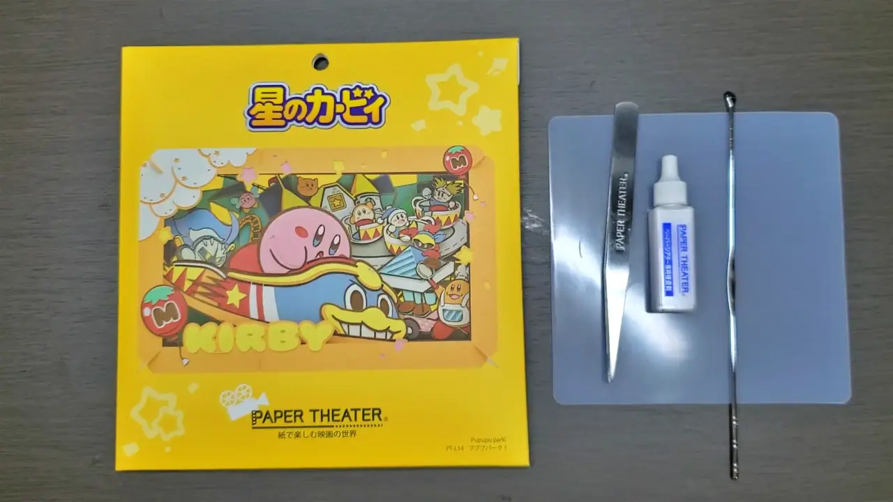

【ペーパーシアター】難易度激高のペーパークラフトに挑戦したら、ハチャメチャにムズかった！！！①
#ブログ
2024/08/03
ペーパーシアターって知ってる？
どうもこんにちは！はちみつです。
みなさんはペーパーシアターって知ってます？
ペーパーシアターは、あらかじめカットされた紙を何重にも重ねて一つの絵を作り上げる、メチャクチャ楽しいペーパークラフトなのです。
▶PAPER THEATER®公式サイト
上の公式サイトを見て頂くと分かるのですが、めちゃめちゃ色んなキャラクターのペーパーシアターがあります。
そして1つ1つのクオリティがめちゃくちゃ高い！！！
公式サイトとかの画像で見ると凄さが伝わりにくいと思うので、もしお近くにペーパーシアターを展示している店舗があれば見てみてください！僕はそれで惚れました。
前に作ったことがある
実は僕、前に一回ペーパーシアターを作ったことがあります。
このワープスターに乗ってるカービィですね。

奥行きがあるので見るのが楽しい！！！
ペーパーシアターには難易度が書いてあって、このワープスターは★4.5でした。最大で★5
初めて作ったのがかなり難易度高めの奴だったので、実はちょっとだけミスってる部分もあったりします・・・笑
今回作るペーパーシアター
という訳で今回作るペーパーシアターと使う道具を紹介します。
左からペーパーシアター、専用ピンセット、専用接着剤、耳かきです。
※本来はカッターも必要です。皆さんがペーパーシアターを作る時は必ず用意してください。
え？耳かきがあるのはおかしいだろって？
まぁまぁまぁ。待ってくださいよ。
この耳かきの使い道は後で話すので、先に今回作るペーパーシアターを紹介しましょう。
これがパッケージの裏面です。
ここには用意するもの、完成サイズ、セット内容(中に入ってる紙のパーツ)が書いてあります。
あと、難易度も書いてありますね。
ん？待てよ・・・？
オイ！！！難易度MAXじゃねぇか！！！
お前2つ目のペーパーシアターで一番高ぇ難易度やるとかバカすぎるんじゃねぇのか？？？
と、心の中のトッコリがツッコんで来ましたが、気にせず進みましょう。え？トッコリを知らない？・・・ググれ！！！
中身を取り出すとこんな感じ。
紙のパーツと、組み立てる為の説明書が付いています。
ってこの説明書・・・

クソデケェーーーーーーーーーーーーーーーーッッッッッ！！！！！！！！！！
ごめん、あんまり伝わらないかもしれないんだけど、めちゃめちゃデカいです。
多分A2くらいのサイズかな？
しかも、裏面にも手順が書いてあります。前とは比べ物にならないー・・・かも？
でもこの説明書、めちゃめちゃ分かりやすいです。
1パーツずつ貼る箇所が図で説明されてるので、初心者でも全然普通に作れます。
早速組み立てよう！
という訳で、色々紹介は終わったので早速作って行きましょう！
ペーパーシアターには、こんな感じの基礎の紙が何枚かあって、それにパーツを貼り付けていきます。
枠に番号が振ってあるので、説明書通り1から順番に作って行きましょう。
まずは番号が書いてある枠を基礎から外しましょう。
この枠は必要ないので捨てちゃって大丈夫です。ちなみにペーパーシアターはめっちゃゴミが出ます。パーツとゴミが混同すると厄介なので、ゴミ箱の近くで作ろう。
これがパーツの紙です。
パーツにもそれぞれ数字が振ってありますね。
ここの数字は基礎の数字に対応しているので、今回使うのは1のパーツですね。
パーツを紙から切り離すときは、パーツを破かないように慎重に切りましょう。
引っ張って外すことも出来るんですが、マジでカッターを使ってね。マジで後悔するぜ・・・
それじゃあこれを接着剤で基礎に貼り付けましょう。
今回はダイソーでシリコンマットを買ってきました。
ここに接着剤を出すと乾いた後の処理もめっちゃ楽なのでは？と思って買ってきました。
結果的に大成功だったのでみんなも買っておくことをオススメします！

そして接着剤を耳かきで取る。
これは別に耳かきに対する冒涜ではありません。耳かきを耳にしか使っちゃいけないだなんて、一体誰が言ったんだい！！！
・・・という訳で、これで紙に接着剤を塗るのが一番やりやすいのでは？と思って、この耳かきもダイソーで買ってきました。
もちろん新品です。

ぬりぬり・・・
これ、めっちゃやりやすいぞ！！！！！
細かい所にも薄く塗れるし、おまけに手も汚れない！
これもあるとめっちゃ便利だぞ！！！
耳かきである必要は無さそうだけど・・・
パーツに接着剤を塗ったら、説明書通りに基礎へ貼り付けていきます。
説明書をよく見ないと「微妙にズレてた！」なんて事がよくあるので慎重に貼り付けましょう。
という訳でどんどん組み立てていきます。
・・・
・・・
・・・
ズレた！！！！！！！！！！！！！！！！！！！！！
言ったそばからミスりました。
ま、まぁこれくらいならまだ誤差みたいなもんですから・・・
2番目も気にせずどんどん作って行きましょ！
って、いきなり複雑すぎません？？？
メタナイトのパーツ、めっちゃ細かい上に複雑ですね・・・
なんとか大きなミスをせずに完成させられました
この調子でデデデの乗り物も作りましょう！
・・・って、

またやらかしました。

説明書だとこの右の部分に縁を残して貼り付けるって描いてあるんですが、縁を残さずぴったり貼り付けちゃいました・・・
結果、ここの赤と青はぴったりくっつくはずなのに、ミスったせいでおかしなことになっちゃいました。
まぁいっか！！！※良くない

という訳で2番目も組み立てました！
2番目の組み立てだけで1時間もかかりました・・・
紙を沢山重ねてるので、上から見ると結構分厚いですね。
まだまだ続く・・・
今回作るペーパーシアターは6枚あるので、まだまだ続きます。
ただ、ちょっと記事が長くなっちゃったので続きは次回に回したいと思います！
それじゃあ次回また会いましょう！！！
バイバイ！